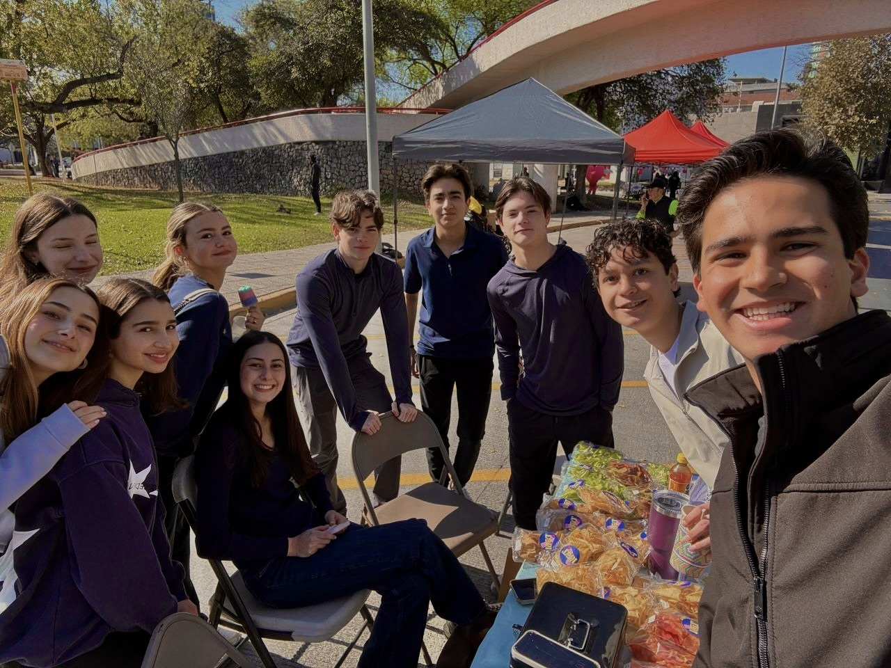
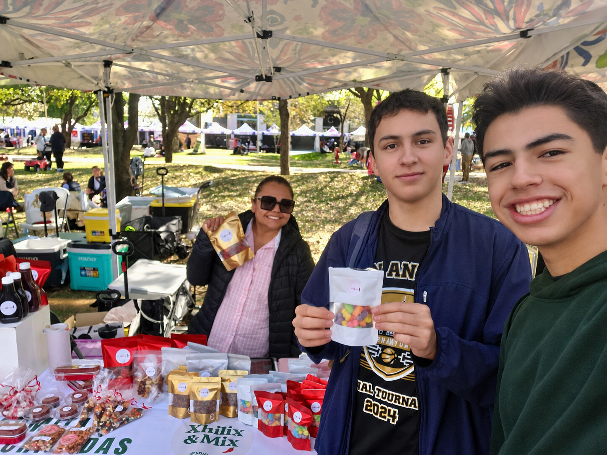
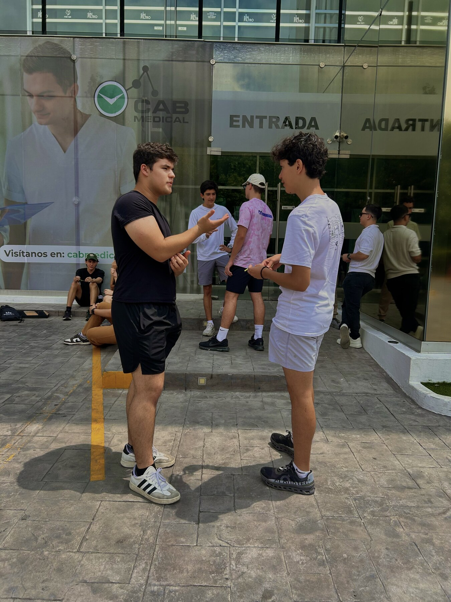

No sabes exactamente qué va a pasar.
Ese es el punto.
Llegas quizá sin conocer a nadie.
Cinco minutos después ya estás hablando con alguien nuevo.
Te ponemos un reto.
Te da un poco de pena.
Lo haces de todas formas.
Te ríes. Fallas. Vuelves a intentar.
Terminas haciendo algo que probablemente no habrías hecho por tu cuenta.



No vienes a demostrar qué tan bueno eres comunicando.
Vienes a descubrir de qué eres capaz cuando te atreves a practicarlo.